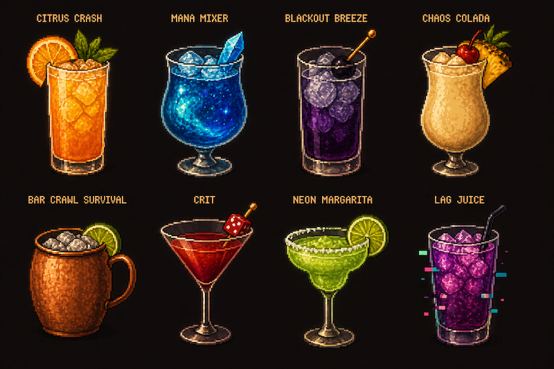
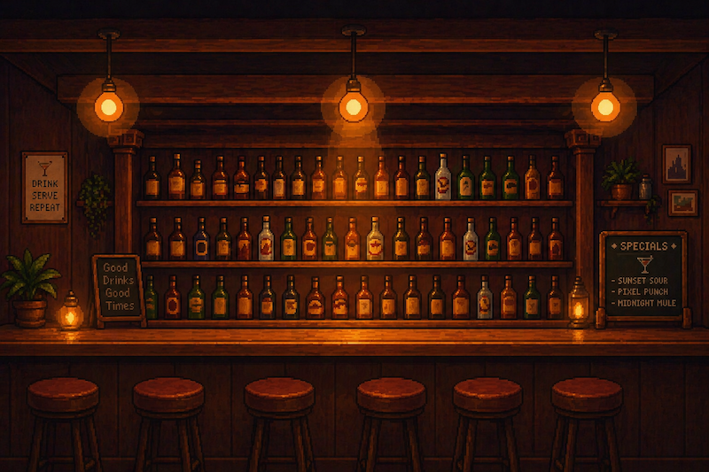
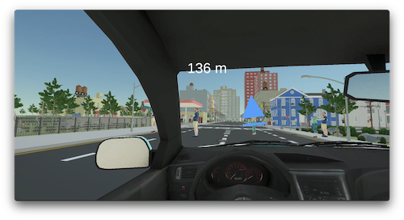
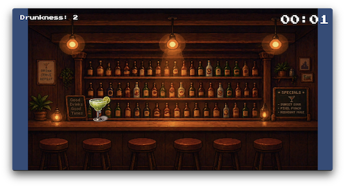

About the Game
A simple night that turns into something more serious.
Just One More is a two-part narrative game that explores how a simple night out can escalate into dangerous consequences. The game begins in a bar setting, where the player interacts with drink-based mini-games and pacing decisions.
As the night progresses, the experience shifts into a driving sequence where the choices made earlier directly affect control, difficulty, and outcome.
Key Features
- Bar-based mini-game focused on drinking decisions
- Transition from social setting to driving gameplay
- Consequence-driven mechanics between phases
- Multiple outcomes based on player behavior
- Escalation and impaired judgment as central themes
Gameplay
Two connected phases. One chain of consequences.
Bar Mini-Game
Players begin in a bar environment where they engage with drinks, timing, and pacing. The goal is not only to win, but to manage choices that influence the later driving section.
Driving Sequence
After leaving the bar, the game shifts into a driving section. Earlier player choices affect driving difficulty, vehicle control, and the overall outcome.
Trailer
Gameplay Trailer
The trailer shows the bar mini-game, the transition into driving, and the increasing tension caused by earlier decisions.
Watch the trailer here if video does not work.
Design & Visuals
Warm bar lighting. Cold nighttime consequences.
The visual design uses a grounded nighttime aesthetic. The bar environment feels warm, dim, and social, while the driving section becomes darker and colder.
This contrast reinforces the shift from control to consequence. The UI is intentionally minimal so players focus on timing, behavior, and outcomes.




Future Development
Where the game can go next.
Future development could expand the game with more varied bar scenarios, additional mini-games, and deeper drinking mechanics that affect gameplay in more complex ways.